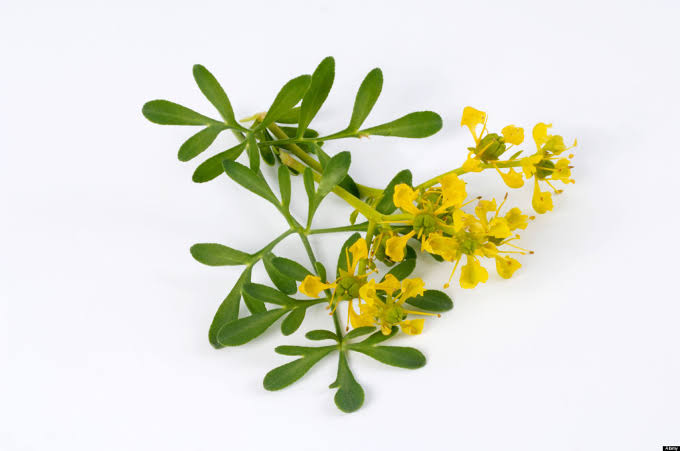

Ruda
Ruta graveolens
La ruda es una planta aromática con hojas pinnadas y flores amarillas.
Propiedades y Beneficios
La ruda es conocida por sus propiedades **antiespasmódicas**, **eméticas** y **abortivas**. Contiene compuestos como la rutina y el aceite esencial que le confieren efectos medicinales potentes.
Es utilizada para calmar dolores menstruales, aliviar cólicos intestinales y como repelente natural de insectos. Sin embargo, debe usarse con precaución ya que puede ser tóxica en dosis elevadas.
Uso Tradicional Maya
En la medicina tradicional mesoamericana, la ruda era empleada para regular el ciclo menstrual y aliviar dolores asociados. También se utilizaba como protector espiritual contra el mal de ojo y energías negativas. Los mayas la consideraban una planta sagrada con poderes purificadores.
Receta: Infusión Calmante
- Ingredientes: 1 taza de agua y 1 cucharada de hojas secas de ruda.
- Preparación: Colocar el agua en un recipiente y poner a hervir. Añadir las hojas secas, bajar la flama y dejar en reposo durante 10 minutos.
- Aplicación: Cuando esté lista, cuela la infusión y sirve caliente. Puedes añadir un endulzante de tu gusto. Tomar con moderación, máximo una taza al día.